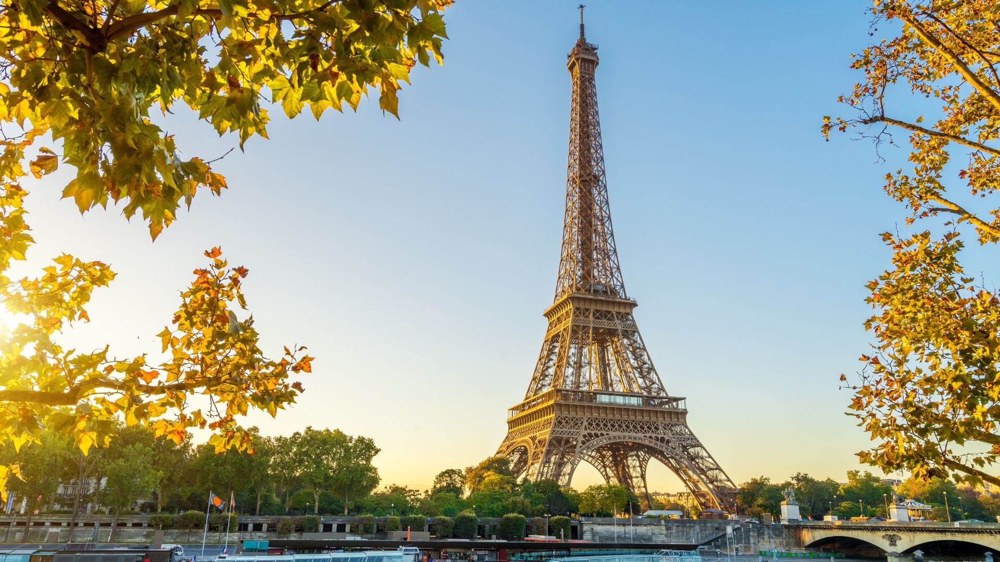

¿Nunca visitaste Europa?
Este paquete incluye cuatro destinos: España, Francia, Inglaterra e Italia, visitando sus respectivas capitales. Es ideal para quienes viajan por primera vez al continente y quieren conocer sus principales atracciones turísticas.
Destinos incluidos
- Madrid, España
- París, Francia
- Londres, Inglaterra
- Roma, Italia
Durante el recorrido podrás conocer lugares como la Torre Eiffel, el Big Ben, el Coliseo y el Palacio Real de Madrid. El alojamiento será en hoteles de la cadena Meliá.
